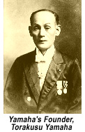

El 2 de Octubre de 1958 se estableció formalmente YAMAHA DE MÉXICO gracias al señor Rokuro Tago. Un año después, llegó directamente de Japón el primer presidente de YDM, el señor Mitsuo Kasahara. El objetivo era muy claro: establecer la firma como líder en venta de motocicletas e impulsar posteriormente la industria musical a través de los pianos. Es entonces cuando se inaugura la Tienda Yamaha en la calle de 20 de Noviembre, en el primer cuadro de la ciudad de México. La bodega donde eran armadas y almacenadas las motocicletas estaba ubicada en el callejón de Nezahualcóyotl número 82 entre las calles de Bolivar e Isabel la Católica.
Al cabo de unos años, una motocicleta era ensamblada en tan solo 30 minutos.Tomás Tago no calculaba en aquella juventud, que la industria de los instrumentos en México estaba por dar un giro inesperado. Mientras eso sucedía, la venta de motocicletas pasaba por su mejor momento.